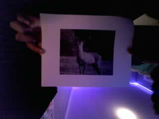
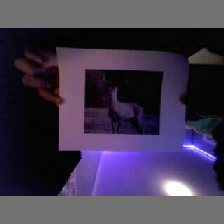

Trial 1, frame 1 — score 0.43782350420951843, confirmed False
Capture lighting: ambient; transfer complete: True; committed: True; recognition alarm commanded: False


The original JPEG and exact signed INT8 input are paired with the device result. The input preview dequantizes the retained tensor for display; the .input.i8 file is authoritative. Transfer time is separate from inference time. Alarm commands do not measure actual sound/light, and correlated frames are not independent animal trials.
Recording summary · Events and markers
Capture lighting: ambient; transfer complete: True; committed: True; recognition alarm commanded: False

